Normalizing
normalizing.RmdQuantitative proteomics relies on accurate normalization, for which
several choices are available, yet remain somewhat difficult to
accurately implement or require formatting data differently for each.
For example, a simple alignment of measured median’s requires only a few
lines of code, while implementing normalization from the
limma package requires non-intuitive
formatting of the data. The normalize() function is
designed as a wrapper to handle various methods of normalization all at
once, then allowing researchers the ability to examine the result and
choose the method best suited for their analysis. Alternatively, the
select_normalization() function can automatically select
the best normalization based on a weighted score combining CVs, dynamic
range and variability in the first three PCA components, or the user can
override this selection manually. The values from the selected
normalization are then use for all downstream plots and analyses such as
expression() and enrichment().
Normalization currently supports the following methods:
| Method | Description |
|---|---|
| scaled | values are aligned medians and dynamic ranges to adjusted to be similar |
| median | values are simply aligned to the same median value |
| linear | a linear regression is applied to each sample according to individual analyte means |
| limma | wrapper to the limma package |
| loess | a non-linear loess (quantile) regression applied to each sample according to individual analyte means |
| svm | a non-linear egression (support vector machine) applied to each sample according to individual analyte means. This implementation utilizes eps-regression from the e1071 package and tuning of the gama and cost parameters. |
| randomforest | a non-linear random forest regression applied to each sample according to individual analyte means |
Normalization of the whole proteome
# path_to_package_data() loads data specific to this package
# for your project load local data
# example:
# your_proteins <- "./data/your_exported_results.xlsx" %>%
# import("ProteomeDiscoverer", "proteins")
rdata <- path_to_package_data("pd_ecoli-hint_proteins.xlsx") %>%
import("ProteomeDiscoverer", "proteins") %>%
normalize()Visualizing
Plotting the overall variation and dynamic range. It is easy to reduce variability simply by squashing the dynamic range - plotting that here can ensure that does not happen. Keep in mind that the overall dynamic range for several mis-aligned sets will be smaller when properly normalized - often median normalization has an immediate impact on the CVs and is the least rigorous. Note here the dramatic reduction in CVs randomforest yielded while also maintaining the overall dynamic range.

Effect of Normalization on Dynamic Range
The effect randomforest has on the data is most noticable at the lower dynamic range, as seen in the plot below where the CVs for values under 10^6 in abundance have been dramatically reduced. If you are hunting for low abundant biomarkers, this method is highly recomended.
path_to_package_data("pd_ecoli-hint_proteins.xlsx") %>%
import("ProteomeDiscoverer", "proteins") %>%
normalize(.method = c('median', 'randomforest')) %>%
plot_dynamic_range()Normalization based on a subset
In addition to proteome wide normalization, a subset can be used as
the basis for normalization, such as the case for spike-in quantitative
analytes or the perhaps the bait protein in an immunoprecipitation
experiment. This is accomplished with the same semantic syntax as with
the subset() function and is reflected in the recorded
operations. Be aware that using a regression from a smaller dynamic
range than the full proteome may not predict well beyond the limts of
the subset.
NOTE: The randomforest normalization method, as implemented, requires the the prediction set size to match the training test size, and therefore is only applicable to normalization of the whole proteome. The limma normalization method also does not accept a subset for normalization. Both of these methods will be skipped if a subset is implemented.
rdata <- path_to_package_data("pd_ecoli-hint_proteins.xlsx") %>%
import("ProteomeDiscoverer", "proteins") %>%
normalize(description %like% 'ribosome',
.method = c('median', 'linear', 'loess', 'svm'))
rdata %>% plot_variation_cv()
rdata %>% plot_dynamic_range()
rdata %>% operations()
#> ℹ Data Transformations
#> • Data files (pd_ecoli-hint_proteins.xlsx) were imported as proteins from
#> ProteomeDiscoverer
#>
#> • Data normalized via median, linear, loess, svm.
#>
#> • Data normalized using subset description %like% ribosome.
#>
#> • ... based on a subset 2772 of 2661 identifiers
#>
#> • Normalization automatically selected as linear.